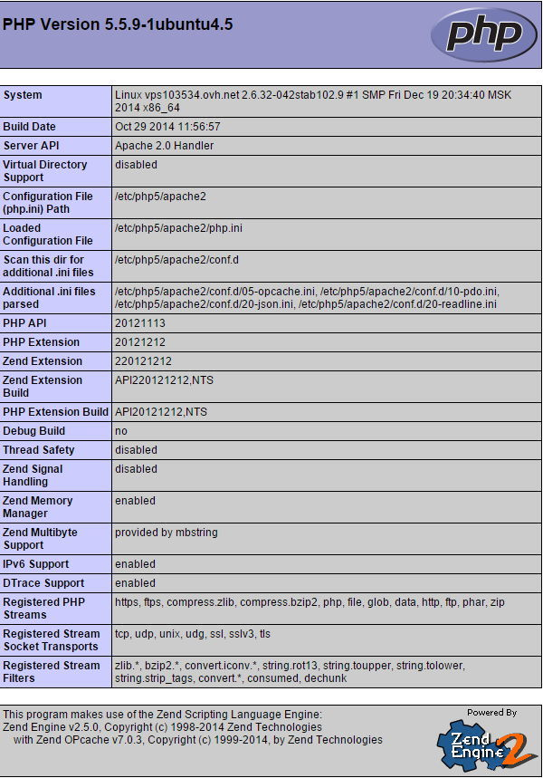

Chúng ta sẽ cài đặt PHP 7.2.
Xóa PHP 7.0 cũ:
sudo apt-get remove php
Và các gói của php-* nữa
Thêm repo sau:
sudo add-apt-repository ppa:ondrej/php
sudo apt update
sudo apt install php7.2 php7.2-common php7.2-cli php7.2-fpm php7.2-mysql php7.2-gd
php7.2
php7.2-cgi
php7.2-curl
php7.2-enchant
php7.2-gmp
php7.2-intl
php7.2-mbstring
php7.2-opcache
php7.2-pspell
php7.2-snmp
php7.2-sybase
php7.2-xmlrpc
php7.2-bcmath
php7.2-cli
php7.2-dba
php7.2-fpm
php7.2-imap
php7.2-json
php7.2-mysql
php7.2-pgsql
php7.2-readline
php7.2-soap
php7.2-tidy
php7.2-xsl
php7.2-bz2
php7.2-common
php7.2-dev
php7.2-gd
php7.2-interbase
php7.2-ldap
php7.2-odbc
php7.2-phpdbg
php7.2-recode
php7.2-sqlite3
php7.2-xml
php7.2-zip
Kiểm tra lại:
php --version
Để cài đặt PHP và các module PHP cho Apache trên Ubuntu, hãy gõ lệnh sau:
sudoapt-getinstallphp libapache2-mod-php
Với phiên bản Linux Mint 18.3 thì sẽ cài PHP 7.
Cài luôn kết nối đến MySQL
sudo apt-get install php-mysqlVà thiết lập cấu hình để nó ưu tiên index file index.php thay vì
index.html bằng cách sửa file /etc/apache2/mods-enabled/dir.conf
thành dưới đây (thêm index.php):
<IfModule mod_dir.c>
DirectoryIndex index.php index.html index.cgi index.pl index.php index.xhtml index.htm
</IfModule>
Nhớ khởi động lại Apache.
service apache2 restartBạn hãy kiểm tra bằng cách tạo một file info.php trong thư mục domain với nội dung:
<?php phpinfo(); ?>Chạy nó thì nếu hiển thị như dưới đây là ok.

Nếu bạn muốn cài thêm các module khác cho PHP thì có thể tìm tên các module trong gói cài đặt bằng lệnh sau:
apt-cache search php5-Kết quả sẽ trả về danh sách các module mà bạn có thể cài đặt vào, ví dụ:
php5-cgi - server-side, HTML-embedded scripting language (CGI binary)
php5-cli - command-line interpreter for the php5 scripting language
php5-common - Common files for packages built from the php5 source
php5-curl - CURL module for php5
php5-dbg - Debug symbols for PHP5
php5-dev - Files for PHP5 module development
php5-gd - GD module for php5
php5-gmp - GMP module for php5
php5-json - JSON module for php5
php5-ldap - LDAP module for php5
php5-mysql - MySQL module for php5
php5-odbc - ODBC module for php5
php5-pgsql - PostgreSQL module for php5
php5-pspell - pspell module for php5
php5-readline - Readline module for php5
php5-recode - recode module for php5
php5-snmp - SNMP module for php5
php5-sqlite - SQLite module for php5
php5-tidy - tidy module for php5
php5-xmlrpc - XML-RPC module for php5
php5-xsl - XSL module for php5
libphp5-embed - HTML-embedded scripting language (Embedded SAPI library)
php5-adodb - Extension optimising the ADOdb database abstraction library
php5-apcu - APC User Cache for PHP 5
php5-enchant - Enchant module for php5
php5-exactimage - fast image manipulation library (PHP bindings)
php5-fpm - server-side, HTML-embedded scripting language (FPM-CGI binary)
php5-gdcm - Grassroots DICOM PHP5 bindings
php5-gearman - PHP wrapper to libgearman
php5-geoip - GeoIP module for php5
php5-gnupg - wrapper around the gpgme library
php5-imagick - ImageMagick module for php5
php5-imap - IMAP module for php5
php5-interbase - interbase/firebird module for php5
php5-intl - internationalisation module for php5
php5-lasso - Library for Liberty Alliance and SAML protocols - PHP 5
bindings
php5-librdf - PHP5 language bindings for the Redland RDF library
php5-mapscript - php5-cgi module for MapServer
php5-mcrypt - MCrypt module for php5
php5-memcache - memcache extension module for PHP5
php5-memcached - memcached extension module for PHP5, uses libmemcached
php5-midgard2 - Midgard2 Content Repository - PHP5 language bindings and
module
php5-ming - Ming module for php5
php5-mongo - MongoDB database driver
php5-msgpack - PHP extension for interfacing with MessagePack
php5-mysqlnd - MySQL module for php5 (Native Driver)
php5-mysqlnd-ms - MySQL replication and load balancing module for PHP
php5-oauth - OAuth 1.0 consumer and provider extension
php5-pinba - Pinba module for PHP 5
php5-ps - ps module for PHP 5
php5-radius - PECL radius module for PHP 5
php5-redis - PHP extension for interfacing with Redis
php5-remctl - PECL module for Kerberos-authenticated command execution
php5-rrd - PHP bindings to rrd tool system
php5-sasl - Cyrus SASL Extension
php5-stomp - Streaming Text Oriented Messaging Protocol (STOMP) client
module for PHP 5
php5-svn - PHP Bindings for the Subversion Revision control system
php5-sybase - Sybase / MS SQL Server module for php5
php5-tokyo-tyrant - PHP interface to Tokyo Cabinet's network interface,
Tokyo Tyrant
php5-vtkgdcm - Grassroots DICOM VTK PHP bindings
php5-xcache - Fast, stable PHP opcode cacher
php5-xdebug - Xdebug Module for PHP 5
php5-xhprof - Hierarchical Profiler for PHP5
Ví dụ mình muốn cài thêm xCache thì gõ:
sudo apt-getinstallphp5-xcache
Cài xong nhớ khởi động lại Apache. Rất dễ phải không?